Java Editor
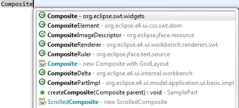
selection proposes all results containing selection as a substring.
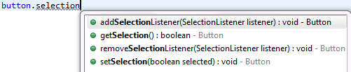
This feature can be disabled using the Show substring matches option on the Java > Editor > Content Assist preference page.
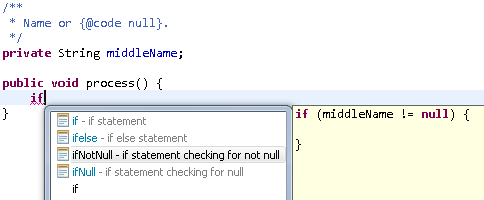

Java Views and Commands
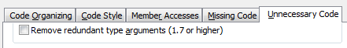
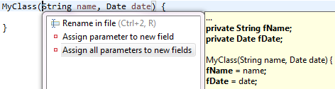
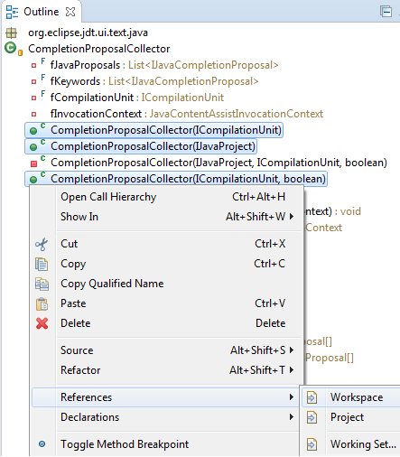
You can even select results in the Search view and start a new search for those elements. To follow method call chains, you'd probably use Open Call Hierarchy, though.On GTK+ this key binding was previously assigned to the Run > Display command as a workaround for Ctrl+Shift+D not working.
@Retention, @Target and @Documented meta-annotations along with their applicable values while creating a new Java annotation type.
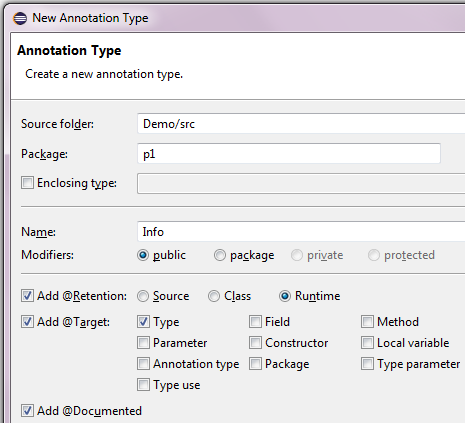
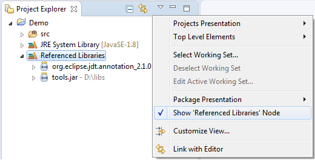 Show 'Referenced Libraries' node" />
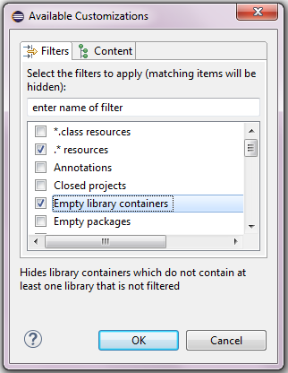
Java Compiler
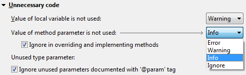
When specified, the information issued by the compiler will be represented as shown here: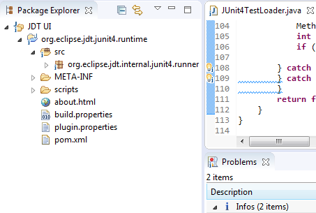

Null Analysis
Please open the dialog for configuring null annotation types from the project properties at Java Compiler > Errors/Warnings > Null analysis:
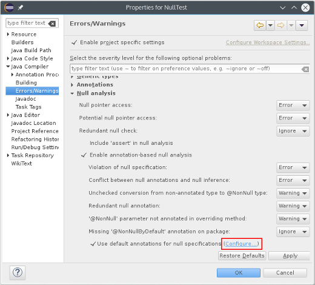
In the dialog that opens, only one primary set of annotations is supported — these are the annotations which JDT actively uses in Quick Fixes, error messages etc. These annotations must be present on the project's build path.
You can now add an arbitrary number of secondary null annotation types, to be evaluated when reading class files external to the project. Within the configuration dialog, Content Assist is offered based on accessible annotation types, but for secondary annotation types unresolved names will be tolerated. This avoids the need to bloat the build path with transitive compile-time dependencies.
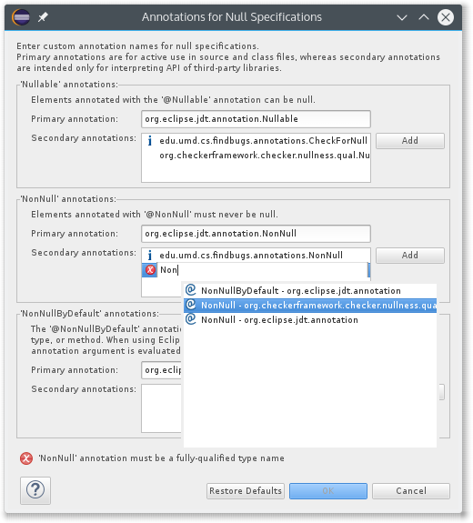
The basic concepts had already been documented in the online help, but not all that was documented was actually checked by JDT's null analysis. With the changes outlined below, null analysis based on type annotations is even more capable than previous versions.
(1) The first batch of contributed improvements implements what we call "pessimistic analysis for free type variables", which affects implementors of generic types.
In order to allow clients to instantiate such a generic class with either a @NonNull or a @Nullable type
as substitution for the "free type variable" <T>, the implementation of that class must account for the worst in both directions:
- To anticipate a
@NonNulltype, each field typed to a free type variable must be initialized with a non-null value, and passingnullwhereTis expected is illegal - To anticipate a
@Nullabletype, each dereference must be preceded by a null check.
At the bottom of each problem hover, you will find a link to the corresponding configuration option, should you like to change the severity of this diagnostic. Note that configurability is mainly given for smooth migration from previous JDT version; conceptually, problems detected by pessimistic analysis should be treated as errors, because they invalidate the null-guarantees given by a generic type.
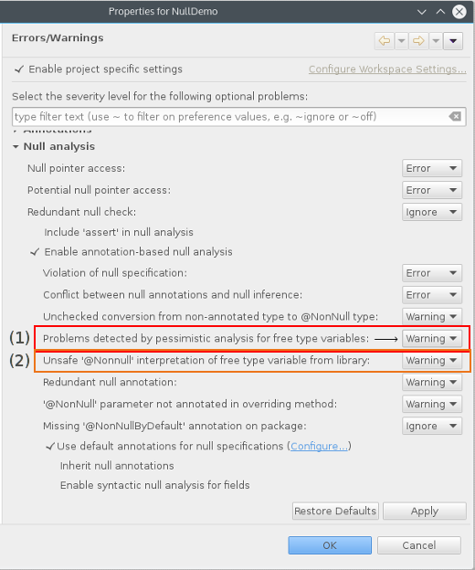(2) The second improvement concerns consumption of generic types from a library, more specifically:
invocations of library methods whose return type is given by a free type variable.
If the library type is instantiated with a @NonNull type as the type argument,
we generally want to interpret the mentioned return type as non-null, too.
This is problematic only for some "legacy" methods, which may return null without declaring so.
The most prominent example is java.util.Map.get(K) (see also the news entry on
external annotations,
which also demonstrates the clean solution to this issue).
The analysis cannot see whether absence of a null annotation for such a return type is intentional (in the above sense of "free type variables"), or an omission that should be fixed. For that reason a new warning has been implemented to alert about this situation.
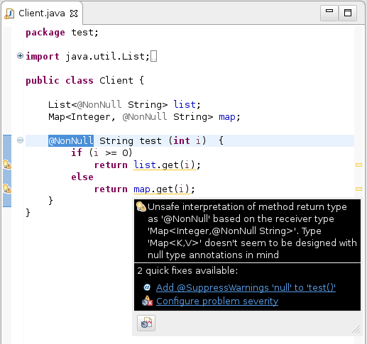In the above example, both fields list and map provide @NonNull String as a
type argument, hence the return types of both get methods are interpreted as non-null.
For List this is desired, for Map it is a bug.
The dilemma can be resolved by adding a (possibly empty) external annotation file (.eea)
to each affected library class. By using an empty annotation file, the user signals that all types
in this class should be interpreted verbatim (like in the List case - use with care).
In the other case, the missing @Nullable annotation should be added as an external annotation
(like in the Map case).
In a project that is not yet configured to use external annotations for the library in question, the warning is demoted to level "information". Generally, the severity of this problem is configured using the option right below the one mentioned above, titled Unsafe '@NonNull' interpretation of free type variable from library.
(3) Finally, a small utility class, org.eclipse.jdt.annotation.Checks,
has been included in the bundle org.eclipse.jdt.annotation_2.1.0
containing helper methods for typical idioms for improving and documenting null safety.
@NonNull annotation to the local variable.
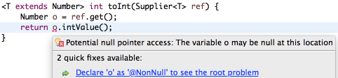
While this may not produce correct code, it tells the compiler your intention to not
allow null in this variable, and subsequently the compiler will answer
with more helpful warnings or errors pointing to the root problem.
In the given example, it will alert you of subtleties about using unconstrained
type variables (see also Improved null analysis with generics):
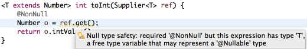
Java Formatter
(1) In the Line Wrapping section, you can control the wrapping policy of 'for' loop headers.

(2) The Align fields in columns feature in the Indentation section can now be configured to recognize groups separated by empty lines and align them independently.
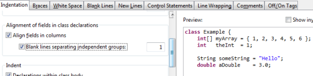
(3) In the New lines section, you can control if new lines should be added after annotations on enum constants.
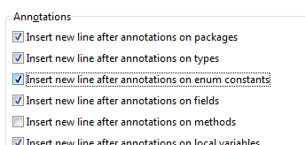
(4) In the new Parentheses tab, you can order the formatter to keep parentheses of various Java elements on separate lines, i.e. put a line break after the opening parenthesis and before the closing parenthesis. This can be done always, only when parentheses are not empty, or when their content is wrapped. There's also an option to preserve existing positions, if you want to manually manage parentheses positions on a case-by-case basis.
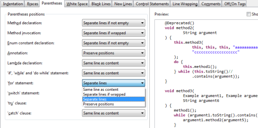
(5) In the Line Wrapping tab, you can set the wrapping policy for parameterized types.
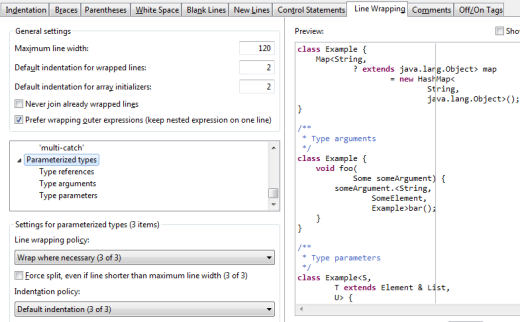
(6) Also in the Line Wrapping tab, you can decide to wrap before or after operators in assignments and conditional expressions.
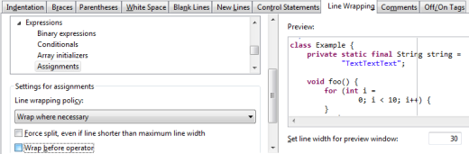
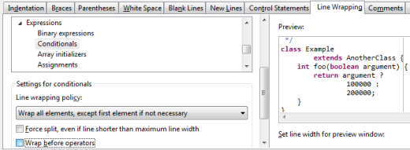
Debug
To always install all enabled breakpoints, you can disable the new option Preferences > Java > Debug > Do not install breakpoints from unrelated projects
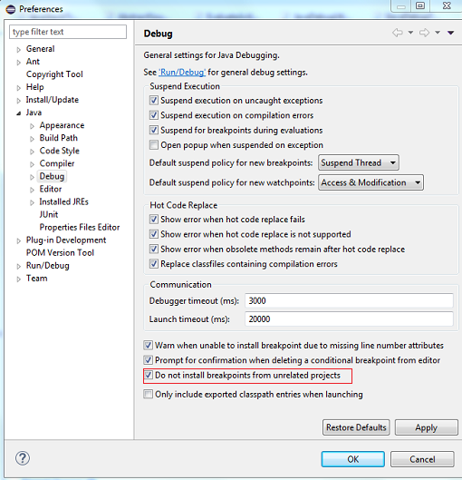
Note that not all projects use explicit Java project dependencies. E.g. OSGi bundles typically use a dynamically computed classpath where project dependencies are computed by PDE.
JUnit
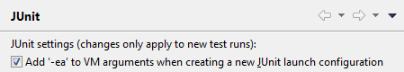